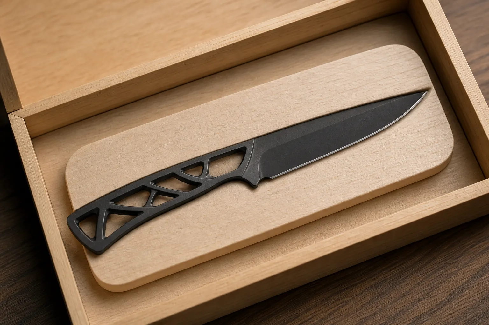
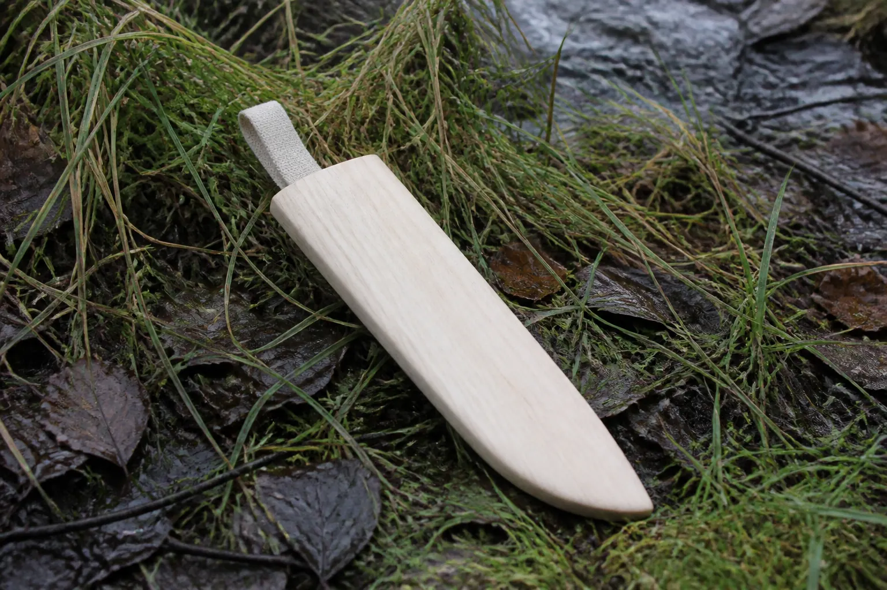
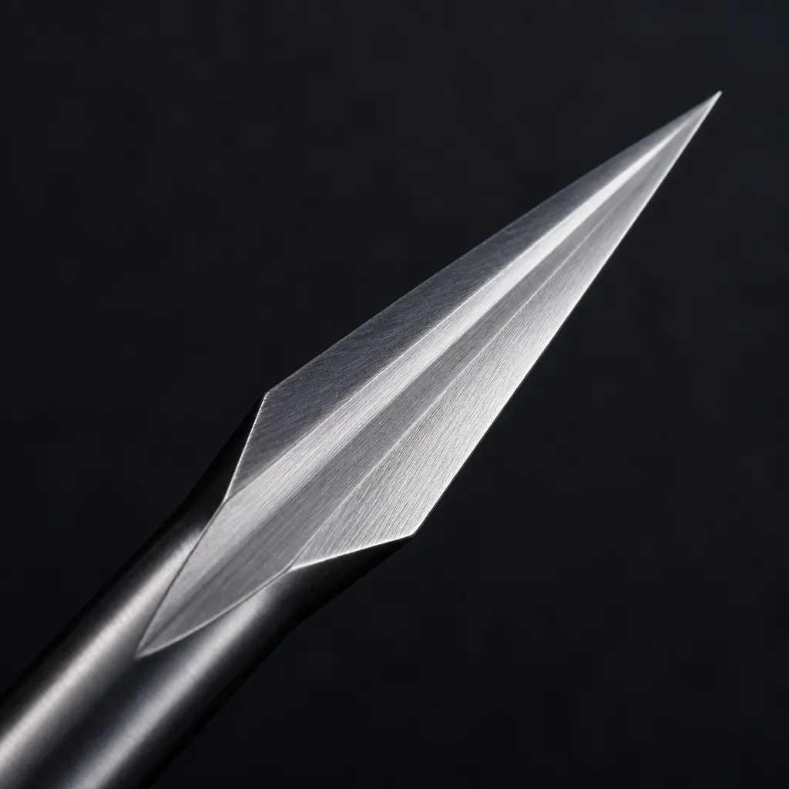
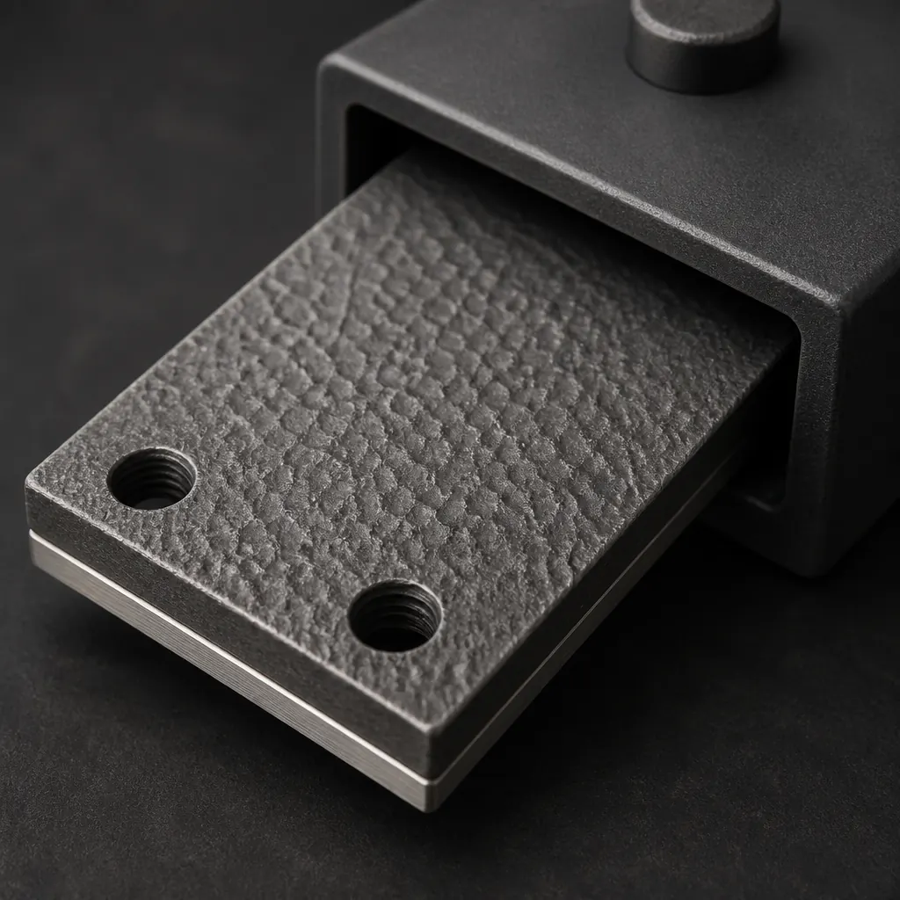
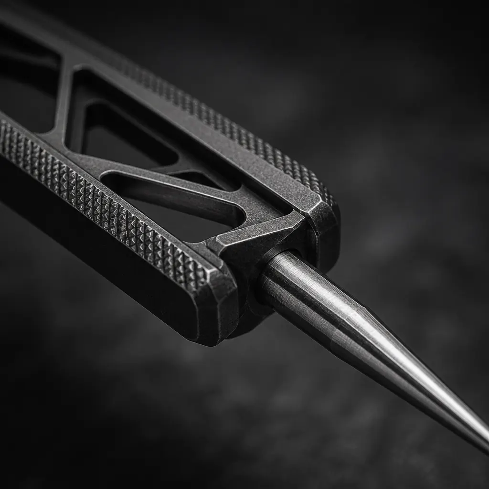
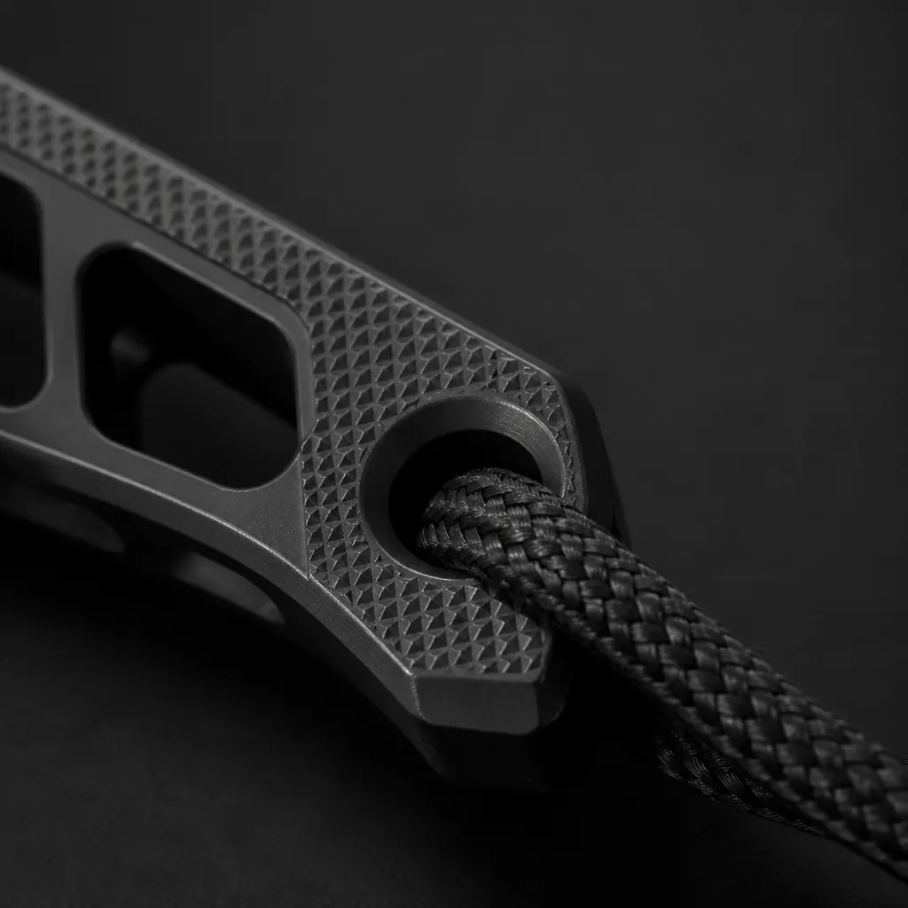
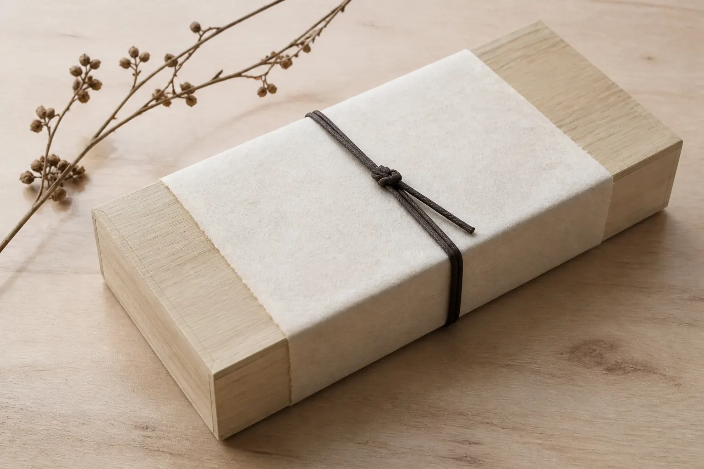
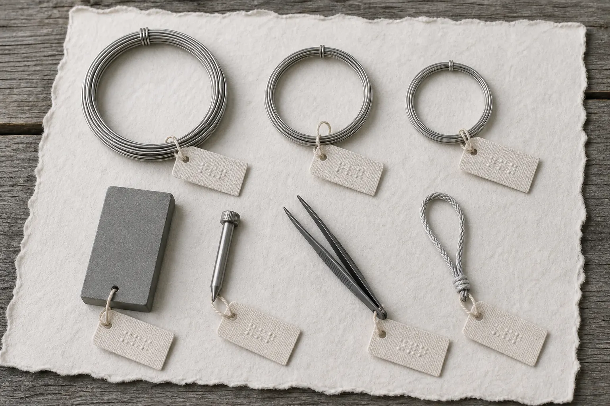

Concept still of the studio chest. Pale wood is the thing you can find. Charcoal metal is the thing you hold. Not factory photography.
Proposed instrument · not for sale here
Numbered. Seated. Accounted for.
SHINOBI//82 KAGE is a shop-and-river kit whose every piece has a job: a grind that can be named, a spike that is not the knife, a plate that restores the edge, a cord that keeps the hand, a saya that does not vanish in grass.
This page proposes a collaboration with Zen-Wu Toolworks. It is not an announced Zen-Wu product, not a quote, and not a claim that Luke Lyu or the Wuhan workshop has accepted the work.
01 · Inventory
The box is a ledger you can open.
Linen tags carry a number and a tactile dot pattern so the kit can be read in low light and by touch. Nothing in the wet system is plastic. Washi and silk stay in the studio chest.
01 — Kusabi frame and one seated blade
The handle is a load-path skeleton, not decorative perforation: dorsal compression rail, ventral tension rail, radiused webs. Diamond knurl lives only on the contact rails — thumb, index, palm — so wet traction does not become a fish-scale trap. The triangular pommel takes the tether. One blade seats at a time.

Concept: blade and saya in wooden cradles, not foam.
02 — Kiri / honoki saya
The sheath is the locator. Charcoal DLC disappears in wet grass; pale wood does not. A linen tab tucks into the mouth and unfolds as a finger of contrast. The end cord is a pull, not ornament. Open drainage. No Kydex, no magnet, no rattle against the edge.

The saya is designed to be seen. The knife stays sheathed and dark.
03 — KAGE-HARI miniature steel spike
Ikejime is not a knife trick. A dedicated 34 mm hardened spike, capped, locks across the saya as a T-handle using the TOGI plate as the wet grip. The knife tip is reserved for tracing. Species have different brain locations; confirm with a current ikijime reference. Large salmon or thick-skulled catfish may need a full-size spike. This page is not a slaughter manual.

Concept macro of the spike point — not the knife kissaki.
04 — SHINKEI wires
S-50: 0.8 × 500 mm for backcountry trout and most bass. L-80: 1.2 × 800 mm for adult Niagara salmon. Optional XL 1.5 × 800 mm is a studio spare, not a pack default. Rounded polished tips follow the canal. One compromised diameter is refused. Japanese makers such as Belmont already produce shape-memory wires in these sizes; that is precedent, not a partnership claim.
05 — TOGI plate: steel and strop
One rectangular plate, two working faces: 600-grit diamond for damage, 1200-grit for daily maintenance, and a replaceable 1 μm diamond film strop on the reverse. The hammered face is wet traction when the plate becomes the T-handle for the spike. Fixed angle indexes: 12°, 14°, 15°, 17°, 24°. The ura of a KUMIKO module is never lifted. Zen-Wu already sells diamond plates and publishes a grit table.

Concept: hammered traction face, not a logo panel.
06 — Pinbone tweezer
Beta-titanium, 0.55 g target, nests in the saya. Built for pinbones and fine membrane, not for ikejime. If you can feel a pinbone with MIZU, this is what removes it without opening a second tool pouch.
07 — SK99 tether
The hand opens. The knife does not leave. A short Dyneema SK99 loop through a radiused pommel hole — high tenacity, it floats, it melts near 140°C, and a sharp aperture will cut it, so the hole is radiused and the fiber never crosses the edge. Black braid, not costume paracord. Not a wrap. Not in the food-contact stack.
02 · Instrument language
Charcoal you can grip. Steel you can inspect.
The object’s own finish is monochrome: DLC or equivalent charcoal on the titanium frame, brushed rail on the cutting steel, diamond knurl only where a wet finger needs it. This is not tactical ornament. It is traction, rinse, and a point that does one job.

Knurl on contact rails onlyKAGE-HARI point

Pommel and tetherTOGI housing
Concept macros. They describe finish and geometry, not a finished production lot.
CAD bench · proposed geometry
Every part, as a model you can turn.
Each piece was built from the same millimetre ledger, then exported as STL. In the viewer, every textured face wears the TOGI plate’s hammered map — one finish, not a new material for each object.
Drag to orbit. Scroll or pinch to zoom. Download the STL for the seated part, or take the OpenSCAD source and the parameter file. This is proposed CAD for conversation, not a released manufacturing package.
Seat a blade in the ledger below, then inspect the zone. Angles are proposed working targets for conversation and CAD — not hardness tickets and not a promise that a first sample will hit them.
Module
MIZU-82
Zone
Belly 22–70 mm
Presentation / reverse
12° / 14°
Behind-edge thickness
0.10–0.13 mm
Job
Skin release and pinbone tracing.
Finish target on MIZU: 800–1000 grit diamond with a 1 μm deburr. A full mirror can slide on fish skin. KUMIKO stays a single 15° flat bevel on a dead-flat back. NATA stays 24° and refuses batoning.
04 · Hold and find
Do not drop it. Do not lose it.
Two different failures. The tether solves the first: if the fingers open over water or a bench, the pommel loop keeps the instrument. The saya solves the second: a charcoal knife in grass is a lost knife; a pale wood sheath with a linen tab is a mark you can walk back to.
Knurl is only on the rails you hold. The lattice stays open so blood, sap, and river water rinse through. No cord wrap. No hidden cavity. No scale screws to loosen in fish slime.
KUMIKO-42 is the module that must register. MIZU is not asked to fake this job.
05 · Layout
A marking land that stays a land.
Joinery is why the kit is modular. KUMIKO-42 inherits Zen-Wu’s published travel-knife idea: flat back, flat bevel, useful for scribing, chamfering, and fitting kumiko. The back is urade-fuyo in spirit — no hollow to rock against a square. Right and left are mirrored tools, not opposite sharpening.
06 · Seat
Seat the kusabi. Read the ledger.
One frame. One blade. Accessories you can name. Masses are a geometric model, not weighed prototypes.
What this does: choose a hand, seat one blade, add only what you will carry. The gram total and the task list update together.
Right-hand defaultDemonstration of seating, not a live product interface
Named starting loadouts. Edit after seating.
Modeled mass
0.00 g
Ounces
0.000oz
Line items
0
Line items
Module
Target
Geometric mass model for conversation and CAD. Not laboratory weighings.
What this loadout will and will not do
07 · Proof
What is already true, and what is still a drawing.
Zen-Wu, as published
Zen-Wu (参物) is a Wuhan toolworks of about seventeen people, with fewer than ten EDM machines and fewer than ten large CNCs. Luke L. is listed as Master of eye.
zenwutoolworks.com/pages/about · retrieved 15 Aug 2026
The Shirabiki-style marking knife is titanium-alloy with a dovetail-laminated Magnacut edge, described as about the weight of a pencil. Dictum lists 165 mm, 40 g, 62–63 HRC.
Marking knife · Dictum 745313
Travel knives: flat backs and flat bevels for whittling, chamfering, kumiko, shop and trail. Japanese-style plane blades are urade-fuyo — no hollow — because the factory back is already flat.
Travel knives · Planes
Steel we will not over-claim
MagnaMax is described by its developer as raising wear resistance over MagnaCut with similar corrosion behavior in a 1% saltwater test. That is Knife Steel Nerds language, not a SHINOBI field result.
Knife Steel Nerds, 19 Jan 2026
Cold Steel publishes the Bird & Game at 3.5 in / 1.4 oz, AUS-8A, polymer. It is the mass benchmark — and the construction this kit refuses.
coldsteel.com/bird-game
No testimonials. No weighed samples. No accepted purchase order. Graphene remains declined as a specified coating.

Studio packaging: kiri, washi, cord. Not the wet system.

Accessory still. Numbers on this page are the record.
08 · Invitation
Compose a studio brief.
The brief is built on this device from the loadout you seated. This site has no inbox. It will not display a false “message sent.”
If the intended reader is Luke at Zen-Wu, start from zenwutoolworks.com. Type a recipient yourself.